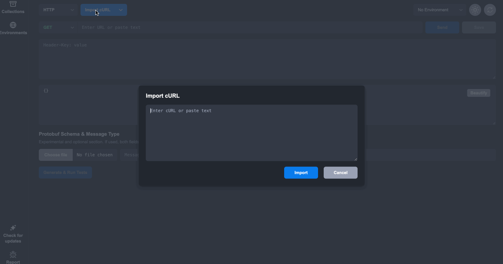

Apigee and Rentgen both live somewhere in the API world, but they are not solving the same problem. Apigee is an enterprise API management platform. Rentgen is a local-first API hygiene scanner. One helps organizations control, secure, publish, monitor, and scale APIs. The other helps teams find out how a specific endpoint behaves when the input is no longer clean.
Comparing them directly is not very useful. Apigee sits around the API as infrastructure. Rentgen points directly at the API implementation and asks what breaks.

Apigee is built for API management
Apigee is designed for organizations that expose APIs at scale. It helps with API gateways, traffic routing, authentication, authorization, rate limits, quotas, policies, analytics, developer portals, and API product management. In large companies, this layer matters a lot.
When many teams, partners, customers, and applications depend on APIs, you need control. Who can call the API? How often? With which token? Through which environment? Under what policy? What happens when traffic spikes? How is usage monitored? How are APIs published and governed?
Those are Apigee problems. They are infrastructure, governance, and platform problems. They are not small problems, and enterprise teams need tools like Apigee because raw endpoints alone are not enough when APIs become products.
But an API gateway does not prove the backend is healthy
A gateway can enforce policies, reject unauthorized traffic, apply quotas, transform requests, and provide analytics. That is valuable. But it does not automatically mean the backend handles bad input correctly.
The endpoint behind the gateway can still have weak validation. It can still return 500 when a required field is missing. It can still accept invalid values, mishandle empty strings, break on malformed JSON, or produce inconsistent error responses that make client integration painful.
Apigee can protect and manage access to an API. Rentgen checks how the API behaves when the request itself becomes ugly.
Rentgen works at the endpoint behavior level
Rentgen starts with one real request, usually copied as cURL, and expands it into many variations. Missing fields, wrong types, boundary values, whitespace, invalid enums, malformed payloads, strange headers, unsupported methods — the boring cases that real systems eventually send.
The goal is not to manage traffic. The goal is to observe behavior. Does the endpoint reject bad input cleanly? Does it return predictable 4xx responses? Does it crash with 5xx errors? Does it behave differently depending on small input changes?
That kind of feedback is useful before formal QA, before long-term automation, and before an API is placed behind serious platform infrastructure.
Different layers, different responsibilities
Apigee works at the API platform layer. It helps organizations expose APIs safely and consistently. Rentgen works at the request behavior layer. It helps developers and QA engineers see what the implementation actually does under imperfect input.
These layers can support each other, but they should not be confused. A well-managed API can still have poor validation. A locally tested API still needs proper gateway policies if it is exposed at scale.
Good API quality needs both kinds of thinking: platform control and implementation behavior.
A workflow that makes sense
Before an endpoint becomes part of a managed API product, developers should understand how it behaves. A working request is not enough. Run it locally, copy the cURL, and let Rentgen check how the backend reacts to imperfect input.
Fix the obvious issues early: unsafe 500 errors, confusing status codes, weak validation, inconsistent responses, or broken authentication behavior. Then move the API into a more structured lifecycle with documentation, gateway policies, monitoring, analytics, and governance.
At that stage, Apigee becomes extremely useful. It controls access, applies policies, manages consumers, tracks usage, and helps operate APIs as real enterprise assets.
No need to choose sides
Apigee is not a replacement for endpoint-level testing. Rentgen is not a replacement for API management. They are different tools for different responsibilities.
Use Rentgen when you want to know whether an endpoint survives bad input. Use Apigee when you need to manage, secure, publish, and scale APIs across teams and consumers.
Apigee helps control how APIs are exposed. Rentgen helps reveal how APIs behave. Same API lifecycle, different layer, different job.